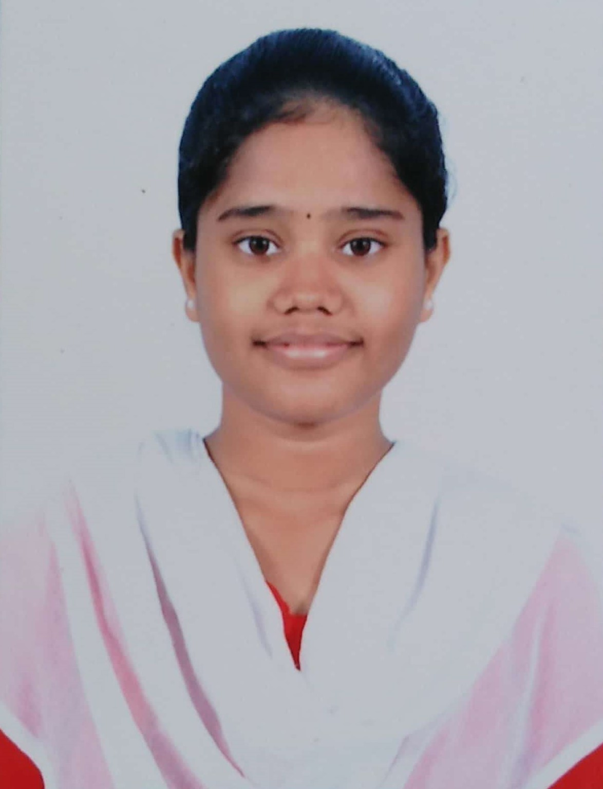

Sireesha Reyyi
Technical Skill Trainer


About Me
- Have been working as a Technical Skill Trainer from the past 9 months in APSSDC (Andhra Pradesh State Skill Development Corporation).
I'm very much Passionate to share my knowledge and skills to students
Skills
- Problem Solving and Programming using Python
- Machine Learning
Educational Qualification
- Electronics and Communication Engineering from Rajiv Gandhi University of Knowledge Technologies-Nuzvid completed in 2019
- Pre-Universoty Course from Rajiv Gandhi University of Knowledge Technologies-Nuzvid completed in 2015
- Secured Secondary School Certification at Zilla Parishad High School, Meliaputti completed in 2013